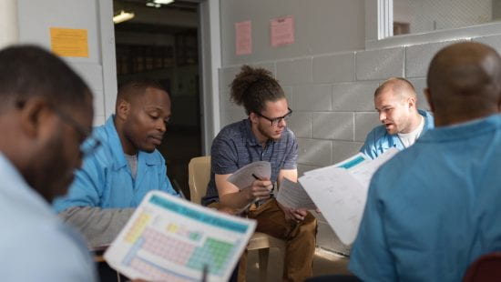
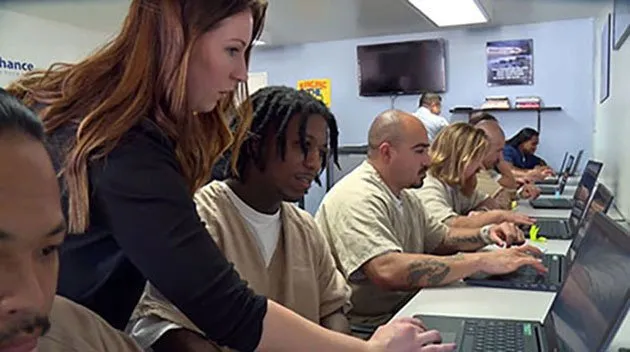
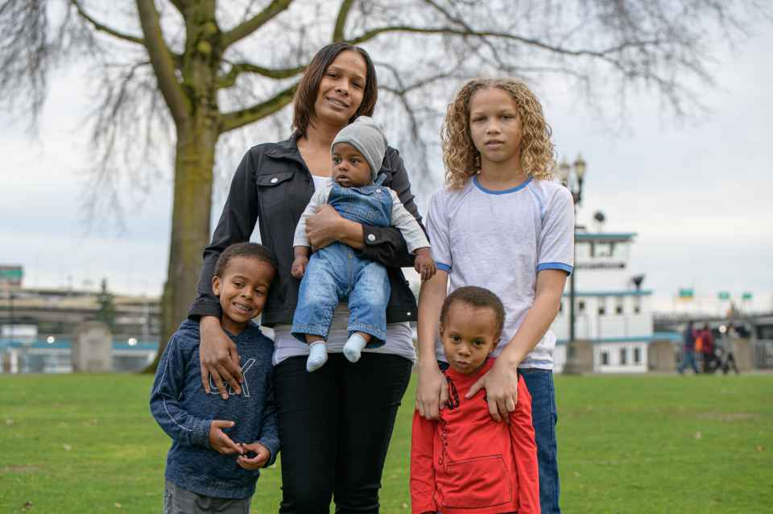

Reentry for Education
Our reentry for education program focuses on developing skills to build websites and software applications. Provides people with criminal records the conditions, resources and tools needed to reach their professional and personal goals. We seek to make your reentry successful.
Reentry to the Workforce
Preparing returned citizens for success in the workforce, through hiring, community, and government partners.
Reentry for families
Family support is a critical part of successful reentry. Family is often a returning community member's best resource once released. By stabilizing families, supporting children with incarcerated or deported loved ones, and providing academic and enrichment support, we seek to help families achieve happiness and well being.